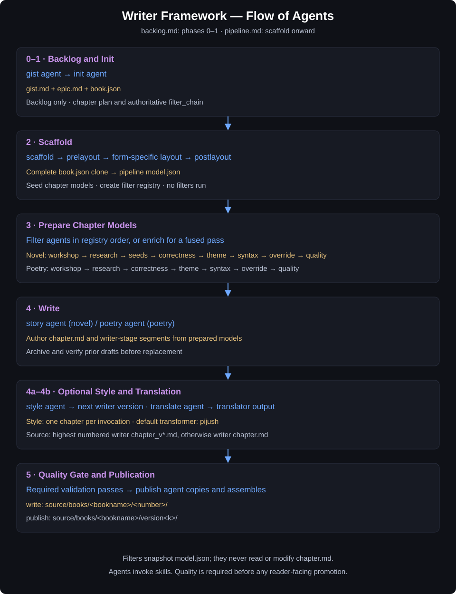

Writer Agent — Implementation Guide
This guide explains how to use the writer agent: a subject-agnostic literary engine that turns backlog epics, workshop narratives, and poetry topic lists into finished book chapters. It weaves three things at runtime: Context (reference and grounding), Style (the selected voice), and Theme (the selected thematic lens).
Start with AGENTS.md. backlog.md owns phases 0–1 (backlog and init); pipeline.md owns scaffold onward. This guide summarizes those contracts; agents remain the entry points for skill-backed work.
.framework/rules/filters.md and applies to all workflows. Every book pipeline passes its material through ordered filters, each owning a folder in the pipeline.
Architecture Overview
| File | Role |
|---|---|
.framework/workflows/pipeline.md | The writing engine. Defines commands, scaffolding, filter execution, form selection, config, and writing rules. |
.framework/skills/layout-novel/SKILL.md | The novel layout authority. Owns novel scaffold shape, book.json, characters, moods, workshop metadata, filters, and chapter/segment path invariants. |
.framework/skills/layout-poetry/SKILL.md | The poetry layout authority. Owns poetry scaffold shape, book.json, bookseed.txt, progress, override, filters, and one-segment chapter layout. |
.framework/skills/research/SKILL.md | Research support. Invoked through the research agent during filtering, after scaffold. Scaffold never runs research or other filters. |
.space/backlog/epic/<bookname>/epic.md | The backlog epic. The single source of truth for a novel's story. Created/updated by the bare /book <bookname> [<gist>] command. |
.space/backlog/epic/<bookname>/book.json | The backlog book plan. The chapter-layout plan plus the authoritative filter_chain and word_target. Produced by init; the blueprint scaffold builds from. |
.space/pipeline/<bookname>/ | The book pipeline. Holds model data, characters, filters, chapter plans, segments, and progress state. |
.space/pipeline/<bookname>/book.json | The book plan. A complete clone of backlog book.json, preserved unchanged throughout scaffold and postlayout. Later explicit config or runtime operations may update it. |
.space/pipeline/<bookname>/bookseed.txt | The poetry index. One topic or term per line; each topic becomes one chapter. |
.framework/templates/stereotypes/<form>/ | The stereotype templates. Signatures, references, themes, qualities, and syntax samples for each form. |
source/books/<bookname>/<version>/ | Verified output. Chapters and the consolidated book live inside a fresh version folder. |
To write a new book: prepare the backlog with the bare /book <bookname> [<gist>] command and init, scaffold the pipeline under .space/pipeline/, run the filter chain (or enrich), and write finished output under source/books/. The workflow file stays subject-agnostic.
Agent Flow
The diagram below shows the flow of agents through the workflow phases — from backlog preparation, through scaffolding and the filter chain, to writing and promotion.

Command System
/book <bookname> [<gist>] [form] [refresh]
/book <bookname> init|backlog|layout [<gist>] [<count>] [form] [refresh]
/book <bookname> scaffold <gist> count|chapter-count <number> [--form novel|poetry]
/book <bookname> <agentname> <chapter>|<n>|all|continue
/book <bookname> filter <filter>|*|all
/book <bookname> enrich <count>|range|*
/book <bookname> write <n>|range|all|continue [<language>]
/book <bookname> style [<style>]
/book <bookname> translate <n>|all|continue <language>
/book <bookname> poet # aliases: poetry, poem
/book <bookname> publish [<language>]
/book <bookname> form <novel|poetry>
/book <bookname> config [<key> [<value>]]
/book <bookname> add <chapter-count> filter <filter>|*|all
/book -o | --options | list
/book -h | --helpThe pipeline command reference supports a write language argument, defaulting to book configuration. AGENTS.md also defines an optional write style, defaulting to pijush; use the explicit style command for an unambiguous transformer selection.
| Command | What it does |
|---|---|
<bookname> (bare) | Creates .space/backlog/epic/<bookname>/epic.md if it does not exist, auto-generating the gist from the book name. If the epic already exists, reports that it exists. Does not scaffold a pipeline. |
<bookname> [<gist>] [form] [refresh] | Creates, updates, or rewrites the epic (recording the seed in gist.md) and develops it into a rich narrative foundation. If gist omitted, infers from book name. If [form] supplied, changes the book's form. Does not scaffold a pipeline. The former gist subcommand is merged into this command. |
init [<gist>] [<count>] [form] [refresh] (aliases: backlog, layout) | Fully configures the backlog epic folder — gist.md, epic.md, book.json — and derives the ordered filter chain plus the chapter-layout plan. With an unchanged gist, a larger count appends missing chapters. Refresh compares the gist before deciding which artifacts to regenerate. Must run before scaffold. |
scaffold <gist> count|chapter-count <number> | Creates or repairs .space/pipeline/<bookname>/ through the scaffold agent (prelayout → layout skill → postlayout), gated by the existence of book.json. Never creates or modifies epic.md. |
<agentname> <chapter>|<n>|all|continue | Runs any registered agent (.framework/agents/<agentname>/agent.md) against selected chapters in an existing pipeline. Does not promote output to source/books/. |
write <n>|all|continue | Writes selected chapters through the story agent for novels or poetry agent for poetry. Preserves prior drafts and creates a fresh numeric output version after required validation. |
filter <filter>|*|all | A named filter runs explicitly; * or all runs active filters in registry order. |
style [<style>] | Transforms one chapter per invocation into a new writer-stage version. Defaults to pijush. |
translate <n>|all|continue <language> | Translates the latest writer-stage source into the pipeline translator folder. |
poet (aliases: poetry, poem) | Routes a single poem through the poetry agent in a poetry pipeline, using the override instructions. |
enrich <count>|range|* | Fuses the active (autorun: true) filters into one combined agent and runs them in a single pass over the selected chapters. |
form <formname> | Sets or changes the pipeline form (novel or poetry). |
config [<key> [<value>]] | Gets or sets stereotype/model config such as signature, reference, theme_set, or syntax. Bare config prints the current configuration. |
add <chapter-count> filter <filter> | Adds more main chapters to an existing book pipeline, then runs the requested filter for the newly added chapters. |
publish [<language>] | Promotes the latest writer-stage (or translator-stage) segments to a versioned source/books/<bookname>/version<k>/ and assembles the consolidated book. |
options | Lists available book pipelines and destinations. |
help | Shows command usage. |
Command Rules
- Parse arguments left to right and preserve supplied text unless the workflow explicitly normalizes it. Subcommand keywords are literal.
- Bare bookname and
init/backlog/layoutoperate only in.space/backlog/epic/<bookname>/. They never initialize a pipeline. - Scaffold requires the existing backlog plan and, for novels, the epic. Explicit gist, count, and form must agree with the plan; resolve differences through
init. - Preserve an existing pipeline and resume from its state. Do not re-scaffold from scratch unless explicitly requested.
- Filters require an existing pipeline. A named filter runs regardless of
autorun;filter *andfilter allrun only active entries in order.enrichfuses active guidance into a single pass. addtakes an additional chapter count, extends the plan and pipeline, and runs filters only for new chapters.write continueselects the next pending chapter from pipeline progress; each write invocation allocates a new numeric output version.- Route all skill-backed work through
.framework/agents/<name>/agent.md. Only writing agents authorchapter.md. - Pass required validation, including the quality gate or an explicitly accepted human override, before marking chapters complete or promoting reader-facing text.
The Form Discriminator
A book is either a novel (prose) or poetry (verse). The form is stored in the pipeline's form field and drives source-of-truth files, filter order, chapter structure, word target, and stereotype templates.
// book.json
"form": "novel"| Signal | Novel | Poetry |
|---|---|---|
form field | "novel" | "poetry" |
| Source of truth | epic.md | book.json + bookseed.txt |
| Chapter structure | flat, continuous prose | flat, continuous poetic prose |
| Segments per chapter | many (segments/1, segments/2, …) | exactly one (segments/1) |
mood.json | present per chapter | absent |
| Filter chain | preset-defined (layout-novel/SKILL.md) | preset-defined (layout-poetry/SKILL.md) |
| Word target | Use the configured chapter word_target | Use the configured chapter word_target |
| Stereotype templates | stereotypes/novel/ | stereotypes/poetry/ |
Pipeline Layout
Pipeline structure is owned by .framework/agents/scaffold/agent.md, which selects .framework/skills/layout-novel/SKILL.md for novels and .framework/skills/layout-poetry/SKILL.md for poetry. The scaffold agent invokes the selected layout skill; the workflow never invokes it directly.
- chapters live only at
.space/pipeline/<bookname>/chapters/<n>/ - segments live only at
.space/pipeline/<bookname>/chapters/<n>/segments/<x>/ - never create root-level
<n>/or<x>/folders under the book pipeline
Scaffold rules are embedded in .framework/workflows/pipeline.md under the Scaffolding section; do not treat any single reference note as the primary scaffold instruction source. The authoritative scaffold execution path is .framework/agents/scaffold/agent.md, which invokes the form-specific layout skill (.framework/skills/layout-novel/SKILL.md or .framework/skills/layout-poetry/SKILL.md).
Scaffolding Flow
Prepare the backlog with the bare bookname command and init, then invoke scaffold. Scaffold creates structure only.
- Require
.space/backlog/epic/<bookname>/book.json, and the existing epic for a novel. Read form, gist, and chapter count from that plan. Resolve mismatched explicit arguments throughinit. - Preserve existing pipeline state. Route scaffold work through
.framework/agents/scaffold/agent.md, which runsprelayoutbefore the form-specific layout skill. - Clone the complete backlog
book.jsonto pipelinebook.json. Preserve every field, value, and chapter entry throughout scaffold, initialization, and postlayout. - Seed each chapter
model.jsonas a single object from the matching plan entry. Match bynameand verifychapter_index. Preserveword_target,chapter_title,chapter_summary,further_references, and any additional source fields. - Build only
filters/filters.jsonfrom the plan's authoritativefilter_chain. Filters create their own folders on first use. Seedfilters/override/filter.mdlazily when a step first needs it and override is in the chain. - Run
postlayoutto write the dynamic pipelineoverride.txtfrom available backlog context and resolved pipeline state. Override artifacts belong to the pipeline, not to backlog initialization. - Verify that the root model still equals the full backlog plan as parsed JSON and each chapter preserves its matching plan entry. Initialize progress without resetting existing work.
- Run filters or
enrichseparately after scaffold. No research, filtering, finished chapters, or source output is produced during scaffold.
The Bare Bookname Command (gist merged)
For /book <bookname> [<gist>] [form] [refresh]:
- Create or update
.space/backlog/epic/<bookname>/epic.mdand develop it into a well-groomed, detailed narrative foundation. - Infer a one-sentence gist from the book name if none is supplied.
- Novel: Develop a rich, well-groomed epic that includes:
- A compelling premise and historical grounding
- Detailed character descriptions, motivations, and arcs
- Thematic threads that weave through the narrative
- Chapter-by-chapter outline with key scenes and turning points
- World-building details (settings, era, cultural context)
- Emotional and philosophical depth
- Poetry: Create a thoughtful epic with thematic grounding, topical structure, and reference to poetic voice/tradition.
- Do not create
.space/pipeline/<bookname>/, do not run layout, and do not run research.
Every novel epic should include a metadata block near the top with title, book name, epic path, timestamps, authoring engine, language, genre, era, chapter count, and gist. Keep backlog metadata current when the epic changes. Backlog commands never update pipeline files.
The Init Command
/book <bookname> init [<gist>] [<count>] [form] [refresh] (aliases: backlog, layout) fully configures the backlog epic folder and derives the ordered filter chain. Init operates only in the backlog; it never creates or modifies pipeline files.
The three backlog artifacts
| File | Role |
|---|---|
gist.md | The seed idea — one-sentence gist plus short expansion. |
epic.md | The full narrative foundation — premise, setting, characters, themes, chapter outline. |
book.json | The chapter-layout plan and the authoritative filter_chain/word_target — the blueprint scaffold builds from. |
Override artifacts belong to the pipeline: postlayout produces override.txt, and the first step needing override instructions seeds filters/override/filter.md. Init creates neither file in the backlog.
Behavior
With an unchanged gist, a larger requested count appends only missing chapters and preserves existing entries; a smaller or equal count never truncates or renumbers them. Chapter summaries are varied, form-neutral seeds derived from the gist and epic. Report previous/new counts and appended chapters.
- If the gist is absent, bootstrap the three backlog artifacts; otherwise fill only gaps (
book.json). - If
[<preset>]is supplied, merge its filter chain intobook.jsonasfilter_chain; otherwise the init agent selects the form-specific default preset (.framework/skills/layout-novel/SKILL.mdfor novel,.framework/skills/layout-poetry/SKILL.mdfor poetry). - If
[form]is supplied and differs from the current form, change it and re-derivefilter_chain,word_target, thechaptersarray, andall_characters(novels) / drop it (poetry). - With
refresh, compare the canonical gist first. If unchanged, refresh onlybook.jsonchapter-summary seeds and required count/form metadata; leavegist.mdandepic.mduntouched. A changed gist regenerates dependent backlog artifacts while preserving the originalCreatedtimestamp. - Do not execute filters; only prepare the filter chain and the chapter-layout plan.
After init, report each artifact as created or existing plus the ordered filter chain. If the pipeline does not exist yet, the next step is /book <bookname> scaffold.
The Add Command
/book <bookname> add <chapter-count> filter <filter> extends an existing book pipeline with more main chapters, then runs the requested filter for those new chapters.
- Stop if
.space/pipeline/<bookname>/does not exist; usescaffoldfirst. - Treat
<chapter-count>as the number of additional main chapters to append, not the new total. - Update the backlog epic, book plan, and
chapter_countfields to the new total. - Create only the new chapter folders and form-appropriate state files under
.space/pipeline/<bookname>/chapters/<n>/. - Run the requested filter only for the newly added chapters.
Filter Chains
Init derives the plan's filter_chain; scaffold transfers that order into filters/filters.json. Resolve runtime agents and autorun flags from this registry. The full validation chains required by AGENTS.md are shown below; a shorter preparation preset does not waive the quality gate.
Novel full validation
workshop -> research -> seeds -> correctness -> theme -> syntax -> override -> quality| Filter | Agent |
|---|---|
| workshop | .framework/agents/workshop/agent.md |
| research | .framework/agents/research/agent.md |
| seeds | .framework/agents/seeds/agent.md |
| correctness | .framework/agents/correctness/agent.md |
| theme | .framework/agents/theme/agent.md |
| syntax | .framework/agents/syntax/agent.md |
| override | .framework/agents/override/agent.md |
| quality | .framework/agents/quality/agent.md |
Poetry full validation
workshop -> research -> correctness -> theme -> syntax -> override -> quality| Filter | Agent |
|---|---|
| workshop | .framework/agents/workshop/agent.md |
| research | .framework/agents/research/agent.md |
| correctness | .framework/agents/correctness/agent.md |
| theme | .framework/agents/theme/agent.md |
| syntax | .framework/agents/syntax/agent.md |
| override | .framework/agents/override/agent.md |
| quality | .framework/agents/quality/agent.md |
Each filter reads the pipeline data and any upstream filter output it needs, then writes to its own folder. Run the full chain strictly in order.
After each filter runs against a chapter, the workflow:
- Snapshots the model first — before any chapter model update, copy
model.jsonintochapters/<n>/history/with a unique timestamped or versioned name. Filters and enrich never read or modifychapter.md; they operate on model data and filter outputs. - Updates the chapter state —
.space/pipeline/<bookname>/chapters/<n>/chapter.jsonis updated:stateis set to the filter that just ran, and afilter_historyarray entry records{ filter, ran_at }. All other fields are preserved (merge, never overwrite).
Stereotype Selection
Every chapter is rendered in a form-specific stereotype:
- Signature:
stereotypes/<form>/signatures/ - Reference:
stereotypes/<form>/references/ - Theme set:
stereotypes/<form>/themes/ - Quality profile:
stereotypes/<form>/qualities/ - Syntax sample:
stereotypes/<form>/syntax/
Read the registry.md in each folder to discover available options, then read the chosen file for the full definition. Selections must be mutually consistent: same form, and where possible the same author or tradition.
Writing Rules
Novel
Novel chapters are written as flat, continuous prose — no section headings. The modern frame scene, the main historical or fictional story, and the characters' response are woven into a single unbroken prose flow, using the epic, filter outputs, included characters, and quality parameters as source material.
Poetry
Each poetry chapter is a single flat, continuous poetic-prose unit — no section headings — generated from one topic in bookseed.txt, grounded in book.json, and rendered in the selected poetic voice.
For both forms
- Use the output language from the pipeline, user request, or config.
- Do not assume Bengali, English, or any other language by default.
- Write in a serious, image-rich literary register unless the pipeline overrides it.
- Meet the chapter model’s configured
word_target; preserve the backlog plan rather than substituting a generic prose or poetry target. - Count words after writing and expand if the chapter is too short.
- End chapters with a running summary or narrative handoff that sustains curiosity.
Style and Translation
/book <bookname> style [<style>] resolves .framework/templates/styles/<style>/style.md (default pijush) through the style agent. Read any companion files required by the template. Transform exactly one chapter per invocation.
Select the highest numbered segments/1/writer/chapter_v*.md, comparing numbers numerically; otherwise use writer chapter.md. If neither exists, the style agent delegates model enrichment and then requires the writing path to produce a writer-stage source. Styling writes the next unused chapter_v<k>.md and does not promote output.
/book <bookname> translate <n>|all|continue <language> uses the same writer-source selection through the translate agent. It writes segments/1/translator/<language-slug>.md, preserving voice and Markdown structure. Normalize the filename by trimming, lowercasing, and replacing spaces with hyphens; language codes remain codes. Archive an existing translation in chapter history/ before replacement. Missing writer sources are reported.
translate continue selects the first chapter with a writer source but no translation for that language. Neither translation nor styling replaces the chapter-root draft or publishes a book.
Output and Publishing
Writing agents preserve an existing live draft before every replacement in segments/<x>/version/chapter_v<k>.md. A distinct writer-stage copy uses writer_chapter_v<k>.md. Verify the archive byte for byte before replacing the source; never overwrite an existing archive.
Reader-facing output requires the validation gate. Each write invocation allocates a fresh numeric version:
source/books/<bookname>/<number>/
|-- book.md
`-- chapters/
|-- Introduction.md
|-- 1.md ... N.md
`-- Conclusion.md/book <bookname> publish [<language>] routes through the publish agent and allocates a fresh version<k> folder. It copies existing segments and assembles them in canonical order; it does not run filters or author new text.
source/books/<bookname>/version<k>/
|-- book.md # writer-stage publication
|-- book_<language>.md # translated publication
`-- chapters/<n>/
|-- chapter.md # writer text
|-- chapter.json # segment metadata, when present
`-- <language>/chapter.md # translated textWithout a language, publish selects the latest writer segment. With a language, it selects the matching translator output and reports missing translations. Report published/skipped counts and assembled paths. Preserve pipeline content; only publication progress metadata may change. Existing published versions remain intact.
Assembly opens with the book title and gist, appends chapters in canonical order with dividers, and includes Introduction and Conclusion for a complete novel. Poetry follows the configured topic order.
Progress Tracking
Always inspect pipeline progress.json and existing source/books/<bookname>/<version>/ folders before writing. The agent resumes from existing state and never restarts from the beginning unless explicitly asked.
Use:
/book <bookname> write continueto resume at the next pending pipeline chapter in a fresh output version./book <bookname> write allto write every chapter in canonical order and assemblebook.mdin that invocation’s version folder after validation./book <bookname> enrich *to fuse the active filters into one pass before chapter writing.